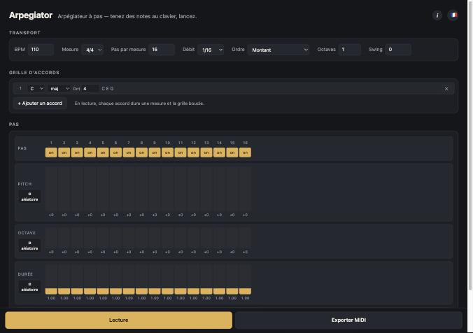

Pantalla principal
Arpegiator es un arpegiador por pasos en una sola página: defines un grid de acordes, configuras los pasos (tono, octava, duración, flags T/R/G) y pulsas reproducir. El acorde actual se arpegia según el orden elegido (ascendente, descendente, aleatorio, …); el grid se repite por ciclo de compases, un acorde por compás.

Vista general de la interfaz
| Cabecera | Título, subtítulo, botón de Ayuda (i) y selector de idioma (bandera). |
|---|---|
| Sección Transporte | Panel con todos los ajustes de reproducción: BPM, Compás (3/4, 4/4, 5/8, 7/8), Pasos por compás (1 a 48), Subdivisión (1/4 a 1/32, incluidos tresillos), Orden del arpegio, Octavas y Swing. |
| Grid de acordes | Cada fila define un acorde por su fundamental, calidad (maj, min, maj7, …) y octava. Botón ✕ para eliminar, « + Añadir acorde » para extender el grid. El acorde en curso está resaltado. |
| Grid de pasos | Un carril por parámetro: barra on/off, tono, octava, duración, flags T (ligadura), R (aleatorio del acorde), G (glisando). Cada columna es un paso. Arrastra verticalmente un deslizador para ajustar el valor; doble clic para reiniciar. El dado « aleatorio » rellena toda la fila. Las flechas ‹ › aparecen si el grid se desborda. |
| Barra de acciones fija abajo | Botón Reproducir/Parar (el texto sigue el estado) y botón Exportar MIDI. Siempre visibles, en cualquier tamaño de pantalla. |